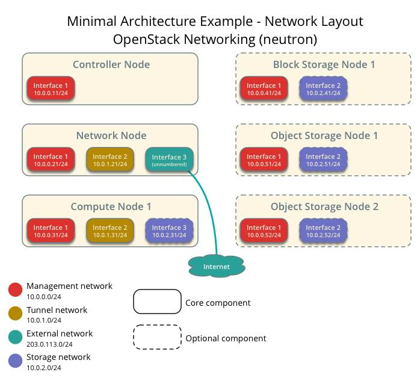
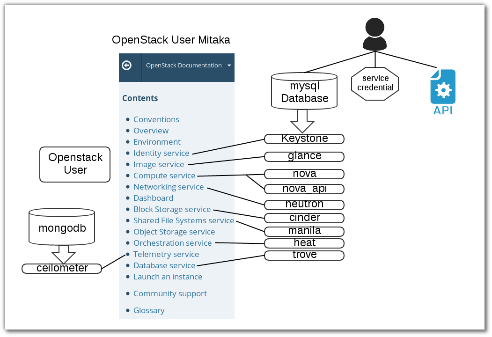

Lab Environment¶
การสร้าง lab environment จะสร้าง โครงสร้าง ของระบบ ด้านล่าง โดยการใช้งาน Vagrant เป็นเครื่องมือสำหรับสร้าง
ตัวอย่าง file vagrant สำหรับการสร้าง infrastructure
# -x- mode: ruby -x-
# vi: set ft=ruby :
boxes = [
{
:name => "controller",
:mgmt_ip => "10.0.0.11",
:hostname => "controller.example.com",
},
{
:name => "network",
:mgmt_ip => "10.0.0.21",
:tunnel_ip => "10.0.1.21",
:hostname => "network.example.com",
},
{
:name => "compute1",
:mgmt_ip => "10.0.0.31",
:tunnel_ip => "10.0.1.31",
:data_ip => "10.0.2.31",
:hostname => "compute1.example.com",
},
{
:name => "compute2",
:mgmt_ip => "10.0.0.32",
:tunnel_ip => "10.0.1.32",
:data_ip => "10.0.2.32",
:hostname => "compute2.example.com",
},
{
:name => "block1",
:mgmt_ip => "10.0.0.41",
:data_ip => "10.0.2.41",
:hostname => "block1.example.com",
},
{
:name => "object1",
:mgmt_ip => "10.0.0.51",
:data_ip => "10.0.2.51",
:hostname => "object1.example.com",
},
]
Vagrant.configure(2) do |config|
boxes.each do |opts|
config.vm.define opts[:name] do |box|
box.vm.box = "centos/7"
box.vm.hostname = opts[:hostname]
box.vm.provision :shell, :inline => "echo root:password | chpasswd"
box.vm.network :private_network, :ip => opts[:mgmt_ip]
if opts[:hostname] == 'network'
box.vm.network :private_network, :ip => opts[:mgmt_ip]
box.vm.network :private_network, :ip => opts[:tunnel_ip]
end
if opts[:hostname] == 'compute1' || opts[:hostname] == 'compute2'
box.vm.network :private_network, :ip => opts[:mgmt_ip]
box.vm.network :private_network, :ip => opts[:tunnel_ip]
box.vm.network :private_network, :ip => opts[:data_ip]
end
if opts[:hostname] == 'block1' || opts[:hostname] == 'object1'
box.vm.network :private_network, :ip => opts[:mgmt_ip]
box.vm.network :private_network, :ip => opts[:data_ip]
end
box.vm.provider :libvirt do |lv|
lv.uri = 'qemu+unix:///system'
lv.driver = 'kvm'
lv.storage_pool_name = 'default'
if opts[:hostname] == 'controller'
lv.memory = 2048
lv.cpus = 2
lv.storage :file, :size => '30G', :type => 'raw'
end
if opts[:hostname] == 'compute1' || opts[:hostname] == 'compute2'
lv.memory = 4096
lv.cpus = 4
end
if opts[:hostname] == 'network'
lv.memory = 2048
lv.cpus = 1
end
if opts[:hostname] == 'block1' || opts[:hostname] == 'object1'
lv.memory = 2048
lv.cpus = 1
lv.storage :file, :size => '20G'
lv.storage :file, :size => '20G'
lv.storage :file, :size => '20G'
end
end
end
end
end
Automate setup¶
Download complete file Vagrantfile-lab1
Test Lab¶
ต่อไปเป็นการทดสอบการใช้งาน Vagrantfile ให้สร้าง โครงสร้าง ด้านบน ส่วนการติดตั้งเป็นการติดตั้งแบบ manual
mkdir openstack2
vagrant plugin install vagrant-scp
vagrant plugin install vagrant-libvirt
sudo systemctl start firewalld
wget https://thaiopen.github.io/SipaLinuxCourse/_downloads/Vagrantfile-lab1
mv Vagrantfile-lab1 Vagrantfile
vagrant up
cat << HOST > hosts
127.0.0.1 localhost localhost.localdomain localhost4 localhost4.localdomain4
::1 localhost localhost.localdomain localhost6 localhost6.localdomain6
10.0.0.11 controller.example.com controller
10.0.0.21 network.example.com network
10.0.0.31 compute1.example.com compute1
10.0.0.32 compute2.example.com compute2
10.0.0.41 block1.example.com block1
10.0.0.51 object1.example.com object1
HOST
cat << TEST > isconnect.sh
#!/bin/bash
ping -c 2 controller
ping -c 2 network
ping -c 2 compute1
ping -c 2 compute2
ping -c 2 block1
ping -c 2 object1
TEST
node="controller network compute1 compute2 block1 object1"
echo $node
//transfer file to vagrant
for n in $node; do vagrant scp hosts $n:/home/vagrant/;done
for n in $node; do vagrant scp isconnect.sh $n:/home/vagrant/;done
//test connectivity
for n in $node; do vagrant ssh $n -c "sudo mv /home/vagrant/hosts /etc/hosts"; done
for n in $node; do vagrant ssh $n -c "bash /home/vagrant/isconnect.sh"; done
// set time zone
for n in $node; do vagrant ssh $n -c "sudo timedatectl set-timezone Asia/Bangkok"; done
for n in $node; do vagrant ssh $n -c "sudo timedatectl"; done
//start network, stop NetworkManager
for n in $node; do vagrant ssh $n -c "sudo systemctl start network"; done
for n in $node; do vagrant ssh $n -c "sudo systemctl enable network"; done
for n in $node; do vagrant ssh $n -c "sudo systemctl disable NetworkManager"; done
for n in $node; do vagrant ssh $n -c "sudo systemctl stop NetworkManager"; done
Security¶
แต่ละ service ของ openstack จะมีสร้างฐานข้อมูลของตนเอง ดังนั้นจะมีการสร้างสร้าง password <SERVICE>_DBNAME และมี password สำหรับใช้ authentication กับ keystone <SERVICE>_PASS โดย การสร้างด้วยคำสั่ง openssl rand -hex 10 เพื่อความสะดวกในการติดตั้ง ทำให้มีการสร้าง passwordlist ใช้สำหรับ database และ ใช้สำหรับ keystone
| Password name | Description |
|---|---|
| Database password (no variable used) | Root password for the database |
ADMIN_PASS |
Password of user admin |
CEILOMETER_DBPASS |
Database password for the Telemetry service |
CEILOMETER_PASS |
Password of Telemetry service user ceilometer |
CINDER_DBPASS |
Database password for the Block Storage service |
CINDER_PASS |
Password of Block Storage service user cinder |
DASH_DBPASS |
Database password for the dashboard |
DEMO_PASS |
Password of user demo |
GLANCE_DBPASS |
Database password for Image service |
GLANCE_PASS |
Password of Image service user glance |
HEAT_DBPASS |
Database password for the Orchestration service |
HEAT_DOMAIN_PASS |
Password of Orchestration domain |
HEAT_PASS |
Password of Orchestration service user heat |
KEYSTONE_DBPASS |
Database password of Identity service |
NEUTRON_DBPASS |
Database password for the Networking service |
NEUTRON_PASS |
Password of Networking service user neutron |
NOVA_DBPASS |
Database password for Compute service |
NOVA_PASS |
Password of Compute service user nova |
RABBIT_PASS |
Password of user guest of RabbitMQ |
SWIFT_PASS |
Password of Object Storage service user swift |
script generate script¶
ในการสร้าง password จะใช้ script ชื่อ gen_pass.sh ด้านล่าง
#!/bin/sh
#
# Populate openstack database password
#
# Mainly inspired by
# sawangpong muadphet <sawangpong@itbakery.net>
#
file="passwordlist"
if [ -f passwordlist ]; then
echo "Sorry, file exist"
exit 1;
fi
SERVICES=(
DB_PASS
ADMIN_TOKEN
ADMIN_PASS
CEILOMETER_DBPASS
CEILOMETER_PASS
CINDER_DBPASS
CINDER_PASS
DASH_DBPASS
DEMO_PASS
GLANCE_DBPASS
GLANCE_PASS
HEAT_DBPASS
HEAT_DOMAIN_PASS
HEAT_PASS
KEYSTONE_DBPASS
NEUTRON_DBPASS
NEUTRON_PASS
NOVA_DBPASS
NOVA_PASS
RABBIT_PASS
SWIFT_PASS
AODH_DBPASS
METADATA_SECRET
MANILA_DBPASS
MANILA_PASS
TROVE_DBPASS
TROVE_PASS
)
for i in ${SERVICES[@]}; do
echo "export ${i}=$(openssl rand -hex 10)" >> passwordlist
done
exit 0
ทดสอบ โดย Download complete file gen_pass.sh:
wget https://thaiopen.github.io/SipaLinuxCourse/_downloads/gen_pass.sh
bash gen_pass.sh
cat passwordlist
// copy file to controller node at /root/
vagrant scp passwordlist controller:/home/vagrant
vagrant ssh controller -c "sudo mv /home/vagrant/passwordlist /root"
vagrant ssh controller
sudo su -
//put password to shell environment การใช้งานโดยการนำค่าตัวแปรใส่ไว้ใน shell environment
source passwordlist
NTP Network Time Protocol¶
On Controller node¶
ติดตั้ง package ที่ controller และโหนดอื่น แต่มีรายละเอียดของ /etc/chrony.conf โดยให้เครื่อง controller node
ชี้ตรงไปยัง ntp server ส่วนเครื่องอื่นให้ชี้มาที่เครื่อง controller ติดตั้ง package ชื่อว่า chrony เพื่อต้องการ sync เวลาให้กับทุกๆโหนด
โดยสามารถที่จะเข้าไปยัง เครื่อง controller ได้จากเครื่อง host โดยการใช้คำสั่ง vagrant ssh controller
โดยผ่านทาง secure shell ได้โดยตรง
for n in $node; do vagrant ssh $n -c "sudo yum install chrony -y"; done
vagrant ssh controller
sudo su -
vi /etc/chrony.conf
เพิ่ม รายชื่อ ของ ntp server
#line3-6
server 0.centos.pool.ntp.org iburst
server 1.centos.pool.ntp.org iburst
server 2.centos.pool.ntp.org iburst
server 3.centos.pool.ntp.org iburst
#เปลี่ยนเป็็น
server 1.th.pool.ntp.org iburst
server 0.asia.pool.ntp.org iburst
server 2.asia.pool.ntp.org iburst
#อนุญาติให้ client เข้ามา sync
#line21
allow 10.0.0.0/24
#ให้ restart service chrony.conf
systemctl start chronyd.service
systemctl enable chronyd.service
chronyc sources
chronyc tracking
exit
exit
#กลับออกไป ที่ host
On other node¶
node="network compute1 compute2 block1 object1"
echo $node
for n in $node; do vagrant ssh $n -c "sudo systemctl start chronyd; sudo systemctl enable chronyd"; done
for n in $node; do vagrant ssh $n -c "sudo sed -i.bak '3,6d' /etc/chrony.conf"; done
for n in $node; do vagrant ssh $n -c "sudo sed -i.bak '3i server 10.0.0.11 iburst' /etc/chrony.conf"; done
for n in $node; do vagrant ssh $n -c "sudo systemctl restart chronyd"; done
for n in $node; do vagrant ssh $n -c "sudo chronyc tracking"; done
OpenStack packages¶
แต่ละ distribution ก็มี packages สำหรรับการติดตั้ง openstack การติดตั้งควรติดตั้ง package จาก repo ที่ล่าสุด และต้อง update ให้เรียบร้อย
* Centos 7 มี extra repo เพื่อติดต้ง openstack สามารถติดตั้ง โดย yum install centos-release-openstack-mitaka
node="controller network compute1 compute2 block1 object1"
for n in $node; do vagrant ssh $n -c "sudo yum install -y centos-release-openstack-mitaka"; done
for n in $node; do vagrant ssh $n -c "sudo yum upgrade -y"; done
for n in $node; do vagrant ssh $n -c "sudo yum install -y python-openstackclient "; done
//automatically manage security policies for OpenStack services
for n in $node; do vagrant ssh $n -c "sudo yum install -y openstack-selinux"; done
Mysql on Controller¶
เกือบทุก openstack service มีการใช้งาน sql database เพิ่อเก็บข้อมูล โดยทั่วไป database จะถูกติดตั้ง บน controller node การติดตั้ง database จะขึ้นกับแต่ละ distro สามารถเลือกติดตั้งได้ทั้ง Mariadb(Mysql) หรือ PostgresSQL
install mariadb on controller¶
#. install package
vagrant ssh controller
sudo su -
yum install -y mariadb mariadb-server python2-PyMySQL
yum install -y openstack-utils
yum install -y wget
#. create and edit /etc/my.cnf.d/openstack.cnf
mv /etc/my.cnf.d/mariadb-server.cnf /etc/my.cnf.d/openstack.cnf
[mysqld]
...
bind-address = 10.0.0.11
default-storage-engine = innodb
innodb_file_per_table
max_connections = 4096
collation-server = utf8_general_ci
character-set-server = utf8
#. Finalize install
systemctl enable mariadb.service
systemctl start mariadb.service
//don't forget อย่าลืม
source passwordlist
//test ทดสอบค่า
echo $DB_PASS
b2d1a3116eb60718f3c4
//set root password ตั้งค่า password
mysql_secure_installation
--or--
mysql -u root <<-EOF
UPDATE mysql.user SET Password=PASSWORD('$DB_PASS') WHERE User='root';
DELETE FROM mysql.user WHERE User='root' AND Host NOT IN ('localhost', '127.0.0.1', '::1');
DELETE FROM mysql.user WHERE User='';
DELETE FROM mysql.db WHERE Db='test' OR Db='test\_%';
FLUSH PRIVILEGES;
EOF
No SQL Server¶
yum install -y mongodb-server mongodb
vi /etc/mongod.conf
6 bind_ip = 10.0.0.11
113 smallfiles = true
systemctl enable mongod.service
systemctl start mongod.service
Message queue¶
ในการdeploy ต้องดูขนาดของ journalfile ด้วย
yum install rabbitmq-server
systemctl enable rabbitmq-server.service
systemctl start rabbitmq-server.service
//source passwordlist to shell
echo $RABBIT_PASS
rabbitmqctl add_user openstack $RABBIT_PASS
rabbitmqctl set_permissions openstack ".*" ".*" ".*"
(result)
Setting permissions for user "openstack" in vhost "/" ...
Memcached¶
ในการ deploy จริงต้องทำ security เพิ่ม
yum install memcached python-memcached
systemctl enable memcached.service
systemctl start memcached.service
Create User in Data¶
user ที่จะต้องสร้าง ใน openstack
Download complete file gen_database.sh:
//how to use file gen_database.sh
wget https://thaiopen.github.io/SipaLinuxCourse/_downloads/gen_database.sh
//check file passwordlist
ls -l passwordlist
undo ลบ database และ ลบ user ที่สร้างขึ้นจากคำสั่งด้านบน
source passwordlist
//show database
mysql -uroot -p$DB_PASS -e "show databases;"
dbs="keystone glance nova_api nova neutron cinder manila heat aodh trove"
for d in $dbs; do mysql -uroot -p$DB_PASS -e "DROP DATABASE $d" ; done
mysql -uroot -p$DB_PASS -e "show databases;"
+--------------------+
| Database |
+--------------------+
| information_schema |
| mysql |
| performance_schema |
+--------------------+
//show user
mysql -uroot -p$DB_PASS -e "SELECT User,host from mysql.user;"
services="keystone glance nova neutron cinder manila heat aodh trove"
for s in $services; do mysql -uroot -p$DB_PASS -e "DROP USER '$s'@'%'" ; done
for s in $services; do mysql -uroot -p$DB_PASS -e "DROP USER '$s'@'localhost'" ; done
for s in $services; do mysql -uroot -p$DB_PASS -e "DROP USER '$s'@'controller.example.com'" ; done
Reset Password Mariadb¶
ในบางครั้งอาจมีความจำเป็น ที่จะต้องเปลี่ยน root password สามารถทำได้ดังนี้
Step1¶
หยุดการทำงานของ mariadb
sudo ps -ef | grep mysql
sudo systemctl stop mariadb
Step2 สั่งคำสั่ง start mysql โดยไม่ผ่าน grant-tables เพื่อให้สามารถใช้งาน database โดย root แบบไม่ต้องใช้ password
mysqld_safe --skip-grant-tables &
[1] 3430
[root@controller ~]# 160712 13:12:02 mysqld_safe Logging to '/var/log/mariadb/mariadb.log'.
160712 13:12:02 mysqld_safe Starting mysqld daemon with databases from /var/lib/mysql
Step3
mysql -u root
Step4 เปลี่ยน password
MariaDB [(none)]> use mysql;
MariaDB [mysql]> UPDATE user SET password=PASSWORD("new_password") WHERE User='root';
MariaDB [mysql]> FLUSH PRIVILEGES;
MariaDB [mysql]> quit;
Step5 หยุดการทำงาน โดยการตรวจสอบ process id (pid)
ps -ef | grep mysql
root 3430 3360 0 13:12 pts/0 00:00:00 /bin/sh /bin/mysqld_safe --skip-grant-tables
mysql 3538 3430 0 13:12 pts/0 00:00:00 /usr/libexec/mysqld --basedir=/usr
//kill ทั้ง สอง process เครืองของท่านอาจมีหมายเลขไม่ตรง
kill -9 3430
[1]+ Killed mysqld_safe --skip-grant-tables
kill -9 3538
//verify
ps -ef | grep mysql
root 3678 3360 0 13:16 pts/0 00:00:00 grep --color=auto mysql
Step6 เริ่มต้นการทำงานใหม่ พร้อมกับ passwordใหม่
systemctl start mariadb
mysql -u root -p